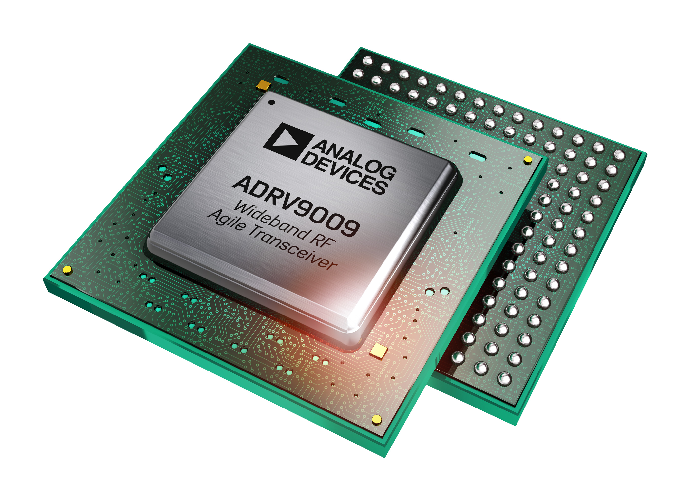

ADRV9009, ADRV9008-1, ADRV9008-2
{kind=link}
The ADRV9009 is a highly integrated, radio frequency (RF) agile transceiver offering dual transmitters and receivers, integrated synthesizers, and digital signal processing functions. The IC delivers a versatile combination of the high performance and low power consumption demanded by 3G and 4G macro cell TDD base station applications. The receive path consists of two independent, wide bandwidth, direct conversion receivers with state-of-the-art dynamic range. The part also supports a wide-bandwidth time-shared observation path receiver for use in TDD applications. The complete receive subsystem includes automatic and manual attenuation control, dc offset correction, quadrature error correction (QEC), and digital filtering, thus eliminating the need for these functions in the digital baseband. Several auxiliary functions such as ADCs, DACs, and GPIOs for PA and RF-front-end control are also integrated. In addition to the autonomous AGC, it also has flexible external gain control modes, allowing significant flexibility in setting system level gain dynamically.
Supported Devices
Evaluation Boards
Description
This is a Linux industrial I/O (IIO) subsystem driver, targeting RF Transceivers. The industrial I/O subsystem provides a unified framework for drivers for many different types of converters and sensors using a number of different physical interfaces (i2c, spi, etc). See IIO for more information.
Source Code
Status
Source |
Mainlined? |
|---|---|
driver |
|
driver |
|
include |
|
Talise API driver |
Files
Function |
File |
|---|---|
driver |
|
driver |
|
include |
|
Talise API driver |
Device Driver Customization
For detailed options and examples see ADRV9009/ADRV9008 Device Driver Customization.
Stream Processor Configuration
What is a stream processor and what is the purpose of that?
The stream processor is a processor within the Talise device tasked with performing a series of configuration tasks upon an external request. Upon a request from the user, the stream processor performs a series of defined actions defined in the image loaded into the stream during device initialization. The stream processor therefore has “streams†(series of tasks) for:
Tx1 Enable/Tx1 Disable, Tx2 Enable/Tx2 Disable
Rx1 Enable/Rx1 Disable, Rx2 Enable/Rx2 Disable
ORx1 Enable/ORx1 Disable, ORx2 Enable/ORx2 Disable
The stream is not limited to path enabling events and can also react to other events such as a GPIO input signal. The stream processor image needs to be changed with every different configuration. It is recommended to use TES GUI and generate stream file for required configuration.
This was added to make sure the signal path is not disrupted when ARM crashes and still the link is available with reduced performance as tracking calibrations are not running.
The stream binary TaliseStream.bin must be stored in the /lib/firmware
folder, or compiled into the kernel using the CONFIG_FIRMWARE_IN_KERNEL,
CONFIG_EXTRA_FIRMWARE config options. Multiple stream binaries can be added.
However a unique name must be given. The stream binary loaded during driver
probe can be specified using following device tree property:
stream-firmware-name = “TaliseStreamXYZ.bin”;
In case no stream is specified or loaded, the driver will continue to use the
standard TaliseStream.bin file.
Function |
File |
|---|---|
Steam |
Example Linux Device-Tree Initialization
The ADRV9009 driver is a spi-bus driver and can currently only be instantiated via device tree.
Required devicetree properties:
compatible: Should always be either “adrv9009”, “adrv9008-1†or “adrv9008-2”
reg: SPI slave select number
Function |
File |
|---|---|
ADRV9009 Device Tree |
|
ADRV9009 Device Tree |
|
ADRV9008-1 Device Tree |
arch/arm64/boot/dts/xilinx/zynqmp-zcu102-rev10-adrv9008-1.dts |
ADRV9008-2 Device Tree |
arch/arm64/boot/dts/xilinx/zynqmp-zcu102-rev10-adrv9008-2.dts |
Enabling Linux driver support
Configure kernel with “make menuconfig†(alternatively use “make xconfig†or “make qconfig”)
Note
The ADRV9009 driver depends on CONFIG_SPI.
Adding Linux driver support
Configure kernel with “make menuconfig†(alternatively use “make xconfig†or “make qconfig”)
Linux Kernel Configuration
Device Drivers --->
<*> Industrial I/O support --->
--- Industrial I/O support
-*- Enable ring buffer support within IIO
-*- Industrial I/O lock free software ring
-*- Enable triggered sampling support
*** Analog to digital converters ***
[--snip--]
-*- Analog Devices High-Speed AXI ADC driver core
< > Analog Devices AD9361, AD9364 RF Agile Transceiver driver
< > Analog Devices AD9371 RF Transceiver driver
<*> Analog Devices ADRV9009/ADRV9008 RF Transceiver driver
< > Analog Devices AD6676 Wideband IF Receiver driver
< > Analog Devices AD9467, AD9680, etc. high speed ADCs
< > Analog Devices Motor Control (AD-FMCMOTCON) drivers
[--snip--]
Frequency Synthesizers DDS/PLL --->
Direct Digital Synthesis --->
<*> Analog Devices CoreFPGA AXI DDS driver
Clock Generator/Distribution --->
< > Analog Devices AD9508 Clock Fanout Buffer
< > Analog Devices AD9523 Low Jitter Clock Generator
<*> Analog Devices AD9528 Low Jitter Clock Generator
< > Analog Devices AD9548 Network Clock Generator/Synchronizer
< > Analog Devices AD9517 12-Output Clock Generator
<*> JESD204 High-Speed Serial Interface Support --->
--- JESD204 High-Speed Serial Interface Support
< > Altera Arria10 JESD204 PHY Support
<*> Analog Devices AXI ADXCVR PHY Support
< > Generic AXI JESD204B configuration driver
<*> Analog Devices AXI JESD204B TX Support
<*> Analog Devices AXI JESD204B RX Support
Hardware configuration
Driver testing / API
Each and every IIO device, typically a hardware chip, has a device folder under /sys/bus/iio/devices/iio:deviceX. Where X is the IIO index of the device. Under every of these directory folders reside a set of files, depending on the characteristics and features of the hardware device in question.
These files are consistently generalized and documented in the IIO ABI documentation. In order to determine which IIO deviceX corresponds to which hardware device, the user can read the name file /sys/bus/iio/devices/iio:deviceX/name. In case the sequence in which the iio device drivers are loaded/registered is constant, the numbering is constant and may be known in advance.
Tip
An example program which uses the interface can be found here:
General attribute naming convention:
IIO sysfs attribute naming prefix |
Target |
|---|---|
Transceiver |
|
in_voltage0_[…] |
RX1 |
in_voltage1_[…] |
RX2 |
in_voltage2_[…] |
Observation RX1 |
in_voltage3_[…] |
Observation RX2 |
out_voltage0_[…] |
TX1 |
out_voltage1_[…] |
TX2 |
out_altvoltage0_[…] |
TRX LO |
out_altvoltage1_[…] |
AUX LO |
Auxilary Converters |
|
in_voltage4_[…] |
AUX ADC0 |
in_voltage5_[…] |
AUX ADC1 |
in_voltage6_[…] |
AUX ADC2 |
in_voltage7_[…] |
AUX ADC3 |
out_voltage2_[…] |
AUX DAC0 |
out_voltage3_[…] |
AUX DAC1 |
out_voltage4_[…] |
AUX DAC2 |
out_voltage5_[…] |
AUX DAC3 |
out_voltage6_[…] |
AUX DAC4 |
out_voltage7_[…] |
AUX DAC5 |
out_voltage8_[…] |
AUX DAC6 |
out_voltage9_[…] |
AUX DAC7 |
out_voltage10_[…] |
AUX DAC8 |
out_voltage11_[…] |
AUX DAC9 |
out_voltage12_[…] |
AUX DAC10 |
out_voltage13_[…] |
AUX DAC11 |
~$
cd /sys/bus/iio/devices/
/sys/bus/iio/devices$
ls
iio:device0 iio:device3 iio:device2 iio:device3 iio:device4 iio:device5 iio:device6
/sys/bus/iio/devices$
cd iio:device3
/sys/bus/iio/devices/iio:device3$
ls -al
total 0
drwxr-xr-x 3 root root 0 May 16 14:21 .
drwxr-xr-x 5 root root 0 May 16 14:21 ..
-rw-rw-rw- 1 root root 4096 May 16 14:22 calibrate
-rw-rw-rw- 1 root root 4096 May 16 14:22 calibrate_frm_en
-rw-rw-rw- 1 root root 4096 May 16 14:22 calibrate_rx_phase_correction_en
-rw-rw-rw- 1 root root 4096 May 16 14:22 calibrate_rx_qec_en
-rw-rw-rw- 1 root root 4096 May 16 14:22 calibrate_tx_lol_en
-rw-rw-rw- 1 root root 4096 May 16 14:22 calibrate_tx_lol_ext_en
-rw-rw-rw- 1 root root 4096 May 16 14:22 calibrate_tx_qec_en
-rw-rw-rw- 1 root root 4096 May 16 14:22 dev
-rw-rw-rw- 1 root root 4096 May 16 14:22 ensm_mode
-rw-rw-rw- 1 root root 4096 May 16 14:22 ensm_mode_available
-rw-rw-rw- 1 root root 32768 May 16 14:22 gain_table_config
-rw-rw-rw- 1 root root 4096 May 16 14:22 in_temp0_input
-rw-rw-rw- 1 root root 4096 May 16 14:22 in_voltage0_gain_control_mode
-rw-rw-rw- 1 root root 4096 May 16 14:22 in_voltage0_gain_control_mode_available
-rw-rw-rw- 1 root root 4096 May 16 14:22 in_voltage0_gain_control_pin_mode_en
-rw-rw-rw- 1 root root 4096 May 16 14:22 in_voltage0_hardwaregain
-rw-rw-rw- 1 root root 4096 May 16 14:22 in_voltage0_hd2_tracking_en
-rw-rw-rw- 1 root root 4096 May 16 14:22 in_voltage0_powerdown
-rw-rw-rw- 1 root root 4096 May 16 14:22 in_voltage0_quadrature_tracking_en
-rw-rw-rw- 1 root root 4096 May 16 14:22 in_voltage0_rf_bandwidth
-rw-rw-rw- 1 root root 4096 May 16 14:22 in_voltage0_sampling_frequency
-rw-rw-rw- 1 root root 4096 May 16 14:22 in_voltage1_gain_control_mode
-rw-rw-rw- 1 root root 4096 May 16 14:22 in_voltage1_gain_control_mode_available
-rw-rw-rw- 1 root root 4096 May 16 14:22 in_voltage1_gain_control_pin_mode_en
-rw-rw-rw- 1 root root 4096 May 16 14:22 in_voltage1_hardwaregain
-rw-rw-rw- 1 root root 4096 May 16 14:22 in_voltage1_hd2_tracking_en
-rw-rw-rw- 1 root root 4096 May 16 14:22 in_voltage1_powerdown
-rw-rw-rw- 1 root root 4096 May 16 14:22 in_voltage1_quadrature_tracking_en
-rw-rw-rw- 1 root root 4096 May 16 14:22 in_voltage1_rf_bandwidth
-rw-rw-rw- 1 root root 4096 May 16 14:22 in_voltage1_sampling_frequency
-rw-rw-rw- 1 root root 4096 May 16 14:22 in_voltage2_hardwaregain
-rw-rw-rw- 1 root root 4096 May 16 14:22 in_voltage2_powerdown
-rw-rw-rw- 1 root root 4096 May 16 14:22 in_voltage2_quadrature_tracking_en
-rw-rw-rw- 1 root root 4096 May 16 14:22 in_voltage2_rf_bandwidth
-rw-rw-rw- 1 root root 4096 May 16 14:22 in_voltage2_rf_port_select
-rw-rw-rw- 1 root root 4096 May 16 14:22 in_voltage2_rf_port_select_available
-rw-rw-rw- 1 root root 4096 May 16 14:22 in_voltage2_sampling_frequency
-rw-rw-rw- 1 root root 4096 May 16 14:22 in_voltage3_hardwaregain
-rw-rw-rw- 1 root root 4096 May 16 14:22 in_voltage3_powerdown
-rw-rw-rw- 1 root root 4096 May 16 14:22 in_voltage3_quadrature_tracking_en
-rw-rw-rw- 1 root root 4096 May 16 14:22 in_voltage3_rf_bandwidth
-rw-rw-rw- 1 root root 4096 May 16 14:22 in_voltage3_rf_port_select
-rw-rw-rw- 1 root root 4096 May 16 14:22 in_voltage3_rf_port_select_available
-rw-rw-rw- 1 root root 4096 May 16 14:22 in_voltage3_sampling_frequency
-rw-rw-rw- 1 root root 4096 May 16 14:22 in_voltage4_offset
-rw-rw-rw- 1 root root 4096 May 16 14:22 in_voltage4_raw
-rw-rw-rw- 1 root root 4096 May 16 14:22 in_voltage4_scale
-rw-rw-rw- 1 root root 4096 May 16 14:22 in_voltage5_offset
-rw-rw-rw- 1 root root 4096 May 16 14:22 in_voltage5_raw
-rw-rw-rw- 1 root root 4096 May 16 14:22 in_voltage5_scale
-rw-rw-rw- 1 root root 4096 May 16 14:22 in_voltage6_offset
-rw-rw-rw- 1 root root 4096 May 16 14:22 in_voltage6_raw
-rw-rw-rw- 1 root root 4096 May 16 14:22 in_voltage6_scale
-rw-rw-rw- 1 root root 4096 May 16 14:22 in_voltage7_offset
-rw-rw-rw- 1 root root 4096 May 16 14:22 in_voltage7_raw
-rw-rw-rw- 1 root root 4096 May 16 14:22 in_voltage7_scale
-rw-rw-rw- 1 root root 4096 May 16 14:22 name
lrwxrwxrwx 1 root root 0 May 16 14:22 of_node -> ../../../../../../../../firmware/devicetree/base/amba/spi@ff040000/adrv9009-phy@1
-rw-rw-rw- 1 root root 4096 May 16 14:22 out_altvoltage0_TRX_LO_frequency
-rw-rw-rw- 1 root root 4096 May 16 14:22 out_altvoltage0_TRX_LO_frequency_hopping_mode_enable
-rw-rw-rw- 1 root root 4096 May 16 14:22 out_altvoltage1_AUX_OBS_RX_LO_frequency
-rw-rw-rw- 1 root root 4096 May 16 14:22 out_voltage0_atten_control_pin_mode_en
-rw-rw-rw- 1 root root 4096 May 16 14:22 out_voltage0_hardwaregain
-rw-rw-rw- 1 root root 4096 May 16 14:22 out_voltage0_lo_leakage_tracking_en
-rw-rw-rw- 1 root root 4096 May 16 14:22 out_voltage0_pa_protection_en
-rw-rw-rw- 1 root root 4096 May 16 14:22 out_voltage0_powerdown
-rw-rw-rw- 1 root root 4096 May 16 14:22 out_voltage0_quadrature_tracking_en
-rw-rw-rw- 1 root root 4096 May 16 14:22 out_voltage0_rf_bandwidth
-rw-rw-rw- 1 root root 4096 May 16 14:22 out_voltage10_offset
-rw-rw-rw- 1 root root 4096 May 16 14:22 out_voltage10_raw
-rw-rw-rw- 1 root root 4096 May 16 14:22 out_voltage10_scale
-rw-rw-rw- 1 root root 4096 May 16 14:22 out_voltage11_offset
-rw-rw-rw- 1 root root 4096 May 16 14:22 out_voltage11_raw
-rw-rw-rw- 1 root root 4096 May 16 14:22 out_voltage11_scale
-rw-rw-rw- 1 root root 4096 May 16 14:22 out_voltage12_raw
-rw-rw-rw- 1 root root 4096 May 16 14:22 out_voltage12_scale
-rw-rw-rw- 1 root root 4096 May 16 14:22 out_voltage13_raw
-rw-rw-rw- 1 root root 4096 May 16 14:22 out_voltage13_scale
-rw-rw-rw- 1 root root 4096 May 16 14:22 out_voltage1_atten_control_pin_mode_en
-rw-rw-rw- 1 root root 4096 May 16 14:22 out_voltage1_hardwaregain
-rw-rw-rw- 1 root root 4096 May 16 14:22 out_voltage1_lo_leakage_tracking_en
-rw-rw-rw- 1 root root 4096 May 16 14:22 out_voltage1_pa_protection_en
-rw-rw-rw- 1 root root 4096 May 16 14:22 out_voltage1_powerdown
-rw-rw-rw- 1 root root 4096 May 16 14:22 out_voltage1_quadrature_tracking_en
-rw-rw-rw- 1 root root 4096 May 16 14:22 out_voltage1_rf_bandwidth
-rw-rw-rw- 1 root root 4096 May 16 14:22 out_voltage2_offset
-rw-rw-rw- 1 root root 4096 May 16 14:22 out_voltage2_raw
-rw-rw-rw- 1 root root 4096 May 16 14:22 out_voltage2_scale
-rw-rw-rw- 1 root root 4096 May 16 14:22 out_voltage3_offset
-rw-rw-rw- 1 root root 4096 May 16 14:22 out_voltage3_raw
-rw-rw-rw- 1 root root 4096 May 16 14:22 out_voltage3_scale
-rw-rw-rw- 1 root root 4096 May 16 14:22 out_voltage4_offset
-rw-rw-rw- 1 root root 4096 May 16 14:22 out_voltage4_raw
-rw-rw-rw- 1 root root 4096 May 16 14:22 out_voltage4_scale
-rw-rw-rw- 1 root root 4096 May 16 14:22 out_voltage5_offset
-rw-rw-rw- 1 root root 4096 May 16 14:22 out_voltage5_raw
-rw-rw-rw- 1 root root 4096 May 16 14:22 out_voltage5_scale
-rw-rw-rw- 1 root root 4096 May 16 14:22 out_voltage6_offset
-rw-rw-rw- 1 root root 4096 May 16 14:22 out_voltage6_raw
-rw-rw-rw- 1 root root 4096 May 16 14:22 out_voltage6_scale
-rw-rw-rw- 1 root root 4096 May 16 14:22 out_voltage7_offset
-rw-rw-rw- 1 root root 4096 May 16 14:22 out_voltage7_raw
-rw-rw-rw- 1 root root 4096 May 16 14:22 out_voltage7_scale
-rw-rw-rw- 1 root root 4096 May 16 14:22 out_voltage8_offset
-rw-rw-rw- 1 root root 4096 May 16 14:22 out_voltage8_raw
-rw-rw-rw- 1 root root 4096 May 16 14:22 out_voltage8_scale
-rw-rw-rw- 1 root root 4096 May 16 14:22 out_voltage9_offset
-rw-rw-rw- 1 root root 4096 May 16 14:22 out_voltage9_raw
-rw-rw-rw- 1 root root 4096 May 16 14:22 out_voltage9_scale
-rw-rw-rw- 1 root root 4096 May 16 14:22 out_voltage_sampling_frequency
drwxrwxrwx 2 root root 0 May 16 14:22 power
-rw-rw-rw- 1 root root 8192 May 16 14:22 profile_config
lrwxrwxrwx 1 root root 0 May 16 14:22 subsystem -> ../../../../../../../../bus/iio
-rw-rw-rw- 1 root root 4096 May 16 14:22 uevent
/sys/bus/iio/devices/iio:device3$
Show device name
/sys/bus/iio/devices/iio:device3$
cat name
adrv9009-phy
Enable State Machine Controls
The ADRV9009 transceiver includes an Enable State Machine (ENSM), allowing real time control over the current state of the device. The ENSM has two possible control methods – SPI control (writing ensm_mode), and pin control.
/sys/bus/iio/devices/iio:device3$
cat ensm_mode_available
radio_on radio_off
/sys/bus/iio/devices/iio:device3$
cat ensm_mode
radio_on
/sys/bus/iio/devices/iio:device3$
echo radio_off > ensm_mode
/sys/bus/iio/devices/iio:device3$
cat ensm_mode
radio_of
Channel Enable/Powerdown Controls
For use cases where pin control mode is not used or required, these attributes can be used to enable/disable the Rx/ORx/Tx signal paths while in the ENSM radio_on state.
Important
Rx and ORx channels can not be enabled at the same time, since they share the same converter. So when stitching from RX to ORx, first powerdown RX, then clear the powerdown controls on ORx.
Writing 0, N or 1, Y to the below attributes either disables or enables the corresponding channel powerdown option.
in_voltage0_powerdown
in_voltage1_powerdown
in_voltage2_powerdown
in_voltage3_powerdown
out_voltage0_powerdown
out_voltage1_powerdown
/sys/bus/iio/devices/iio:device3$
cat in_voltage0_powerdown
0
/sys/bus/iio/devices/iio:device3$
echo 1 > in_voltage0_powerdown
/sys/bus/iio/devices/iio:device3$
cat in_voltage0_powerdown_en
1
Local Oscillator Control (LO)
The ADRV9009 contains two fractional-N PLLs RF PLL and AUX PLL. The RF
PLL generate the RF LO used by the transmitter & receiver, and observation
receiver. The LO mux controlled via in_voltage2_rf_port_select allows either
the RF PLL or the AUX PLL to provide the local oscillator signal source
for the observation receiver ORx1 and ORx2 mixers. The tuning range supported by
this driver covers 75MHz to 6GHz. The lower end cannot go below TxProfile or
RxProfile RFBW/2.
Attribute |
PLL Name |
Source Target |
|---|---|---|
out_altvoltage0_TRX_LO_frequency |
RF PLL |
RX1, RX2, TX1, TX2, ORX1, ORX2 |
out_altvoltage1_AUX_OBS_RX_LO_frequency |
AUX PLL |
ORX1, ORX2 |
/sys/bus/iio/devices/iio:device3$
cat out_altvoltage1_TX_LO_frequency
2400000000
/sys/bus/iio/devices/iio:device3$
echo 2450000000 > out_altvoltage0_TRX_LO_frequency
/sys/bus/iio/devices/iio:device3$
cat out_altvoltage0_TRX_LO_frequency
2450000000
/sys/bus/iio/devices/iio:device3$
cat out_altvoltage1_TX_LO_frequency
2450000000
Frequency Hopping Mode
The RF PLL in ADRV9009 has the ability to change frequency quickly to another
predetermined LO frequency set by the user via the customization interface. The
frequency hopping mode can be enabled using the
out_altvoltage0_TRX_LO_frequency_hopping_mode_enable channel attribute.
out_altvoltage0_TRX_LO_frequency_hopping_mode_enable
/sys/bus/iio/devices/iio:device3$
cat out_altvoltage0_TRX_LO_frequency_hopping_mode_enable
0
/sys/bus/iio/devices/iio:device3$
echo 1 > out_altvoltage0_TRX_LO_frequency_hopping_mode_enable
/sys/bus/iio/devices/iio:device3$
cat out_altvoltage0_TRX_LO_frequency_hopping_mode_enable
1
Next Hop Frequency
The RF PLL in ADRV9009 has the ability to change frequency quickly to another predetermined LO frequency set by the user via this attribute. There are two use cases through which a user can control frequency hopping. GPIO mode, and API mode. In order to use API mode device tree attribute: adi,fhm-mode-fhm-trigger-mode must be set to 1, in case it’s set to 0 GPIO mode is used and adi,fhm-config-fhm-gpio-pin must be in the range of 0..15.
out_altvoltage0_TRX_LO_frequency_hopping_mode
/sys/bus/iio/devices/iio:device3$
cat out_altvoltage0_TRX_LO_frequency_hopping_mode
2400000000
/sys/bus/iio/devices/iio:device3$
echo 2460000000 > out_altvoltage0_TRX_LO_frequency_hopping_mode
/sys/bus/iio/devices/iio:device3$
cat out_altvoltage0_TRX_LO_frequency_hopping_mode
2460000000
Filter and Signal Path Configuration
Profiles
ADRV9009 uses profiles to designate different device configuration settings for the Tx/Rx/ORx channels. When selecting a profile, note that Rx1 and Rx2 use the same profile; Tx1 and Tx2 use the same profile; ORx1 and ORx2 use the same profile. The profile dictates how the digital filters, analog filters, clock rates, and clock dividers are configured in the device. Some specific parameters set by profiles include the IQ data rate, ADC clock rate, analog filter corners, FIR filter coefficients, and interpolation/decimation factors in the half band filters. Several profiles can be examined in the ADRV9009 Transceiver Evaluation Software for given device clock frequencies. If the desired profile exists in the software, it is recommended to setup the desired profile in and use the data structure values generated by the “Create Config.c File†button for the Tx/Rx/ORx profile data structures. Custom profiles can be generated using other ADI software tools not described here MATLAB Profile/Filter Generator for ADRV9009.
Loading a Profile
user@analog:~$
cat Tx_BW200_IR245p76_Rx_BW200_OR245p76_ORx_BW200_OR245p76_DC245p76.txt \
> profile_config
user@analog:~$
RX Signal Path
The ADRV9009 receiver contains all blocks necessary to receive RF signals and convert them to digital data usable by a baseband processor (BBP). Each receiver can be configured as a direct conversion system that supports up to 200MHz bandwidth. Each receiver contains a programmable attenuator stage, followed by matched in-phase (I) and quadrature (Q) mixers that down convert received signals to baseband for digitization. Gain control can be achieved by using the on-chip AGC or by letting the BBP make gain adjustments in a manual gain control mode. Performance is optimized by mapping each gain control setting to specific attenuation levels at each adjustable gain block in the receive signal path. Additionally, each channel contains independent quadrature error correction capability, dc offset tracking, and all circuitry necessary for self calibration. The receivers include ADCs and adjustable sample rates that produce data streams from the received signals. The signals can be conditioned further by a series of decimation filters and a programmable FIR filter with additional decimation settings. The sample rate of each digital filter block is adjustable by changing decimation factors to produce the desired output data rate.
Querying the RX Sample Rate and Primary Signal Bandwidth
/sys/bus/iio/devices/iio:device3$
cat in_voltage0_sampling_frequency
122880000
/sys/bus/iio/devices/iio:device3$
cat in_voltage0_rf_bandwidth
100000000
Observation RX Signal Path
The ADRV9009 contains an independent DPD observation receiver (ORx) front-end with 2 multiplexed inputs and a common digital back-end that is shared with the traffic receiver. The innovative configuration enables a highly efficient shared Rx/ORx mode where the device can support fast switching between Rx and ORx mode in TDD applications. The ORx shares the common frequency synthesizer with the transmitter. The ORx is a direct conversion system that contains a programmable attenuator stage, followed by matched in-phase (I) and quadrature (Q) mixers, baseband filters and ADCs. The continuous-time sigma-delta ADCs have inherent anti-aliasing which reduces the RF filtering requirement. The ADC outputs can be conditioned further by a series of decimation filters and a programmable FIR filter with additional decimation settings. The sample rate of each digital filter block is adjustable by changing decimation factors to produce the desired output data rate.
Querying the ORx Sample Rate
/sys/bus/iio/devices/iio:device3$
cat in_voltage2_sampling_frequency
245760000
/sys/bus/iio/devices/iio:device3$
cat in_voltage2_rf_bandwidth
200000000
Setting the Observation Path LO Source
This attribute sets the LO source for ORx to RFLO or AuxLO, but the setting does not take effect until the ORx rising edge to power up the ORx channel(s). If the LO source is changed while ORx is powered up, the LO source will not take effect until ORx is disabled and re-enabled. This is valid when using pins to set the LO source and control when ORx is enabled as well.
OBS_TX_LO Selects RF PLL
OBS_AUX_LO Selects AUX PLL
/sys/bus/iio/devices/iio:device3$
cat in_voltage_rf_port_select_available
OBS_TX_LO OBS_AUX_LO
/sys/bus/iio/devices/iio:device3$
echo OBS_TX_LO > in_voltage2_rf_port_select
/sys/bus/iio/devices/iio:device3$
cat in_voltage2_rf_port_select
OBS_TX_LO
TX Signal Path
The ADRV9009 transmitter section consists of two identical and independently controlled channels that provide all digital processing, mixed-signal, and RF blocks necessary to implement a direct conversion system while sharing a common frequency synthesizer. The digital data from the JESD204B lanes pass through a fully programmable 128-tap FIR filter with variable interpolation rates. The FIR output is sent to a series of interpolation filters that provide additional filtering and interpolation prior to reaching the DAC. Each 14-bit DAC has an adjustable sample rate. When converted to baseband analog signals, the I and Q signals are filtered to remove sampling artifacts and fed to the upconversion mixers. Each transmit chain provides a wide attenuation adjustment range with fine granularity to help designers optimize signal-to-noise ratio (SNR).
Querying the TX Sample Rate and Primary Signal Bandwidth
/sys/bus/iio/devices/iio:device3$
cat out_voltage_sampling_frequency
245760000
/sys/bus/iio/devices/iio:device3$
cat out_voltage0_rf_bandwidth
75000000
PA Protection
/sys/bus/iio/devices/iio:device3$
cat out_voltage0_pa_protection_en
0
/sys/bus/iio/devices/iio:device3$
echo 1 > out_voltage0_pa_protection_en
/sys/bus/iio/devices/iio:device3$
cat out_voltage0_pa_protection_en
1
RX Gain Control
The ADRV9009 Receivers (Rx1, Rx2) feature Automatic and Manual gain control modes allowing for flexible gain control in a wide array of applications. Automatic Gain Control (AGC) allows for receivers to autonomously adjust the receiver gain depending on variations of the input signal, such as the onset of a strong interferer that can overload the receiver data path. It controls the gain of Talise based on the state of certain signals that are available as inputs to the AGC block. The AGC has the ability to control Talise gain with very fine resolution if required. The receivers are also capable of operating in Manual Gain Control (MGC) mode where changes in gain are initiated by the Baseband Processor (BBP). The Talise gain control blocks are configured by means of the API data structures and several API functions exist to allow for user interaction with the gain control mechanisms. There are three main gain control modes available for the Talise receivers – Manual Gain Control (MGC), Automatic Gain Control (AGC), Automatic Gain Control Fast (AGCFast).
The default gain tables can be found in the talise_user.c file, and are loaded by default. Custom gain tables can be loaded automatically during driver probe or anytime later via the write only gain_table_config sysfs attribute. Tables must be stored in the /lib/firmware folder, or compiled into the kernel using the CONFIG_FIRMWARE_IN_KERNEL, CONFIG_EXTRA_FIRMWARE config options. The table loaded during driver probe can be specified using following device tree property:
adi,gaintable-name = “adrv9009_std_gaintable”;
In case no table is specified or loaded, the driver will continue to use the provided standard gain tables.
Gain tables are stored in a human readable file, with the format specified below.
Example: firmware/adrv9009_std_gaintable
<list>
<gaintable ADRV9009 type=FULL dest=[0|1|2|3|4|5] start=FREQUENCY1_Hz end=FREQUENCY2_Hz>
gain_in_mdB, rxFeGain, extControl, adcTiaGain, digGain[, phaseOffset] /* index 255 */
gain_in_mdB, rxFeGain, extControl, adcTiaGain, digGain[, phaseOffset] /* index 254 */
gain_in_mdB, rxFeGain, extControl, adcTiaGain, digGain[, phaseOffset] /* index 253 */
gain_in_mdB, rxFeGain, extControl, adcTiaGain, digGain[, phaseOffset] /* index 252 */
…
</gaintable>
...
</list>
Assumptions: * Gain tables must be monotonic
The format of the columns in the Rx gain table rows are: { gain_in_mdB, rxFeGain, extControl, adcTiaGain, digGain[, phaseOffset }
The format of the columns in the ORx gain table rows are: { gain_in_mdB, rxFeGain, extControl, adcTiaGain, digGain }
gain_in_mdB: is the absolute Gain in mdB (signed int format)
end must be greater than start frequency (in Hz)
There must be sufficient tables provided to support the entire used tuning range
dest specifies the targeted RX. (0=RX1, 1=RX2, 2=RX1 and RX2, 3=ORX1, 4=ORX2, 5=ORX1 and ORX2)
Loading a gain table
/sys/bus/iio/devices/iio:device3$
ls /lib/firmware/ad9*
adrv9009_std_gaintable
/sys/bus/iio/devices/iio:device3$
cat /lib/firmware/adrv9009_std_gaintable > gain_table_config
Gain control modes
The ADRV9009 Rx supports four modes of gain control. These modes are described in brief below:
Mode |
Description |
|---|---|
Manual Gain Control (MGC) |
Provides the user full control over the current gain index. In MGC, the gain index can be controlled in two ways: through API commands and through GPIO signaling. |
Automatic Gain Control (AGC) |
The AGC will determine when gain changes should be made. There are several configurations that can be used in AGC. Examples include the option to reduce gain as soon as an overrange has been detected (fast attack mode), change gain (if necessary) only at the expiry of a variable length counter (AGC gain update counter, operating without fast attack), synchronization of the counter to an external pulse (AGC enable sync pulse), and others. . |
Hybrid Mode |
Tip
Automatic Gain Control (AGC) and Hybrid Mode are only available on RX1 and RX2
/sys/bus/iio/devices/iio:device3$
cat in_voltage_gain_control_mode_available
manual fast_attack slow_attack hybrid
Querying or Setting a Gain Control Mode
/sys/bus/iio/devices/iio:device3$
cat in_voltage0_gain_control_mode
manual
/sys/bus/iio/devices/iio:device3$
echo slow_attack > in_voltage0_gain_control_mode
/sys/bus/iio/devices/iio:device3$
cat in_voltage0_gain_control_mode
slow_attack
/sys/bus/iio/devices/iio:device3$
cat in_voltage1_gain_control_mode
manual
Reading the current Gain
Supported in all available Gain control modes
/sys/bus/iio/devices/iio:device3$
cat in_voltage0_hardwaregain
30.000000 dB
/sys/bus/iio/devices/iio:device3$
cat in_voltage1_hardwaregain
30.000000 dB
MGC setting the current Gain
Only available in Manual Gain Control Mode (MGC)
Attribute |
Data Path |
|---|---|
in_voltage0_hardwaregain |
RX1 |
in_voltage1_hardwaregain |
RX2 |
in_voltage2_hardwaregain |
OBS1 if in_voltage2_powerdown == 0 |
in_voltage3_hardwaregain |
OBS2 if in_voltage3_powerdown == 0 |
/sys/bus/iio/devices/iio:device3$
echo 20 > in_voltage0_hardwaregain
/sys/bus/iio/devices/iio:device3$
cat in_voltage0_hardwaregain
20.000000 dB
MGC controlling the gain using pin control
These attributes configure the GPIO input pin and step size to allow the BBP to control gain changes in Rx signal chain. A high pulse on the ‘rxGainIncPin’ in pin control mode will increment the gain by the value set in ‘incStep’. A high pulse on the ‘rxGainDecPin’ in pin control mode will decrement the gain by the value set in ‘decStep’.
Writing 0, N or 1, Y to the below attributes either disables or enables the corresponding channel pincontrol option.
Attribute |
Data Path |
|---|---|
in_voltage0_gain_control_pin_mode_en |
RX1 |
in_voltage1_gain_control_pin_mode_en |
RX2 |
Tx Attenuation Control
The TX attenuation/gain can be individually controlled for TX1 and TX2. The range is from 0 to -41.95 dB in programmable steps sizes. The nomenclature used here is gain instead of attenuation, so all values are expressed negative.
/sys/bus/iio/devices/iio:device3$
cat out_voltage0_hardwaregain
-10.000000 dB
/sys/bus/iio/devices/iio:device3$
echo -40.25 > out_voltage0_hardwaregain
/sys/bus/iio/devices/iio:device3$
cat out_voltage0_hardwaregain
-40.250000 dB
/sys/bus/iio/devices/iio:device3$
cat out_voltage1_hardwaregain
-10.000000 dB
Tx Attenuation Pin Control
These attributes configure the GPIO input pin and step size to allow the BBP to control attenuation changes in Tx signal chain. A high pulse on the ‘txAttenIncPin’ in pin control mode will increment the gain by the value set in ‘stepSize’. A high pulse on the ‘txAttenDecPin’ in pin control mode will decrement the gain by the value set in ‘stepSize’.
Writing 0, N or 1, Y to the below attributes either disables or enables the corresponding channel pincontrol option.
Attribute |
Data Path |
|---|---|
out_voltage0_atten_control_pin_mode_en |
TX1 |
out_voltage1_atten_control_pin_mode_en |
TX2 |
Received Strength Signal Indicator (RSSI)
This attribute will report RSSI - however currently it reports Decimated Power instead.
/sys/bus/iio/devices/iio:device3$
cat in_voltage0_rssi
12.75 dB
Calibration Tracking Controls
Tracking Calibrations: The ARM processor is tasked with ensuring that Quadrature Error Correction (QEC) and Local Oscillator Leakage (LOL) corrections are optimal throughout device operation, i.e. over time, attenuation, and temperature. It achieves this by performing calibrations at regular intervals. These calibrations are termed “tracking calibrations”, and utilize normal traffic data to update the path correction coefficients.
Writing 0, N or 1, Y to the below attributes either disables or enables the corresponding tracking option.
Attribute |
Data Path |
|---|---|
in_voltage0_quadrature_tracking_en |
RX1 |
in_voltage1_quadrature_tracking_en |
RX2 |
in_voltage2_quadrature_tracking_en |
ORX1 |
in_voltage3_quadrature_tracking_en |
ORX2 |
out_voltage0_lo_leakage_tracking_en |
TX1 |
out_voltage0_quadrature_tracking_en |
TX1 |
out_voltage1_lo_leakage_tracking_en |
TX2 |
out_voltage1_quadrature_tracking_en |
TX2 |
/sys/bus/iio/devices/iio:device3$
cat in_voltage_quadrature_tracking_en
1
/sys/bus/iio/devices/iio:device3$
echo 0 > in_voltage0_quadrature_tracking_en
/sys/bus/iio/devices/iio:device3$
cat in_voltage0_quadrature_tracking_en
0
ARM Calibrations
Sometimes a certain calibration is not required during power-up, or some other external condition must be met. The attributes detailed below allow the user to reschedule a calibration. Please see “SYSTEM CONSIDERATIONS FOR ARM CALIBRATIONS†section of the Talise User Guide for more information.
Writing 0, N or 1, Y to the below attributes either disables or enables the
corresponding init calibration. They are not run immediately, they are just
masked. In order to run them the calibrate attributes must be written 1 or
Y.
calibrate_frm_en
calibrate_rx_phase_correction_en
calibrate_rx_qec_en
calibrate_tx_lol_en
calibrate_tx_lol_ext_en
calibrate_tx_qec_en
calibrate
/sys/bus/iio/devices/iio:device3$
cat calibrate_tx_lol_ext_en
0
/sys/bus/iio/devices/iio:device3$
echo 1 > calibrate_tx_lol_ext_en
/sys/bus/iio/devices/iio:device3$
cat calibrate_tx_lol_ext_en
1
/sys/bus/iio/devices/iio:device3$
echo 1 > calibrate
AuxADC Reading
The ADRV9009 contains an auxiliary ADC that is multiplexed to 4 input pins (AUXADC_x). The auxiliary ADC is 12 bits with an input voltage range of 0.05 V to VDDA_3P3 – 0.05 V. When enabled, the auxiliary ADC is free running. SPI reads provide the last value latched at the ADC output. TheAuxiliary ADCs can be read like any other IIO ADC.
Attributes are:
in_voltage[4..7]_offset
in_voltage[4..7]_raw
in_voltage[4..7]_scale
To obtain the reading in mV calculate:
(in_voltage4_raw + in_voltage4_offset) * in_voltage4_scale
/sys/bus/iio/devices/iio:device3$
grep "" in_voltage4_
in_voltage4_offset:45
in_voltage4_raw:66
in_voltage4_scale:0.775194
AuxDAC Writing
The ADRV9009 contains ten identical auxiliary DACs (AUXDAC_0 to AUXDAC_9) that can supply bias voltages, analog control voltages, or other system functionality. TheAuxiliary DACs can be accessed like any other IIO DAC.
Attributes are:
out_voltage[2..11]_raw
out_voltage[2..11]_offset
out_voltage[2..11]_scale
/sys/bus/iio/devices/iio:device3$
grep "" out_voltage2
out_voltage2_offset: 2726
out_voltage2_raw:0
out_voltage2_scale: 0.782954
/sys/bus/iio/devices/iio:device3$
echo 1000 > out_voltage2_raw
Advanced Debug Facilities
The ADRV9009 driver supports a number of advanced debug controls via the kernel debugfs. How these device files/controls can be used is described here. The ADRV9009 Advanced Plugin directly controls these and adds a user friendly interface.
Runtime Device Driver Customization
There is a large number of customization options available.
Typically these are supplied via Devicetree.
However for debug and evaluation purposes these can be changed during runtime.
Please note that changes will be lost if the device is unbinded or the platform
is rebooted.
Changes will only take affect once the initialize attribute is written
1. It should also be noted that the ADRV9009 will take a RESET, so current
settings done via the main IIO API will be lost. Accessing
debugfs requires root privileges.
Only device files prefixed with adi, are
customizable.
In order to identify if the IIO device in question (adrv9009-phy) you first need to identify the IIO device number. Therefore read the name attribute of each IIO device
root@analog:~$
grep "" /sys/bus/iio/devices/iio\:device*/name
/sys/bus/iio/devices/iio:device0/name:ams
/sys/bus/iio/devices/iio:device1/name:ad9528-1
/sys/bus/iio/devices/iio:device2/name:ad7291
/sys/bus/iio/devices/iio:device3/name:adrv9009-phy
/sys/bus/iio/devices/iio:device4/name:axi-adrv9009-rx-obs-hpc
/sys/bus/iio/devices/iio:device5/name:axi-adrv9009-tx-hpc
/sys/bus/iio/devices/iio:device6/name:axi-adrv9009-rx-hpc
root@analog:~$
Change directory to /sys/kernel/debug/iio/ iio:deviceX.
~$
cd /sys/kernel/debug/iio/iio\:device3
/sys/kernel/debug/iio/iio:device3$
ls
[--snip--]
adi,tx-settings-tx1-atten_md-b
adi,tx-settings-tx2-atten_md-b
adi,tx1-atten-ctrl-pin-enable
adi,tx1-atten-ctrl-pin-step-size
adi,tx1-atten-ctrl-pin-tx-atten-dec-pin
adi,tx1-atten-ctrl-pin-tx-atten-inc-pin
adi,tx2-atten-ctrl-pin-enable
adi,tx2-atten-ctrl-pin-step-size
adi,tx2-atten-ctrl-pin-tx-atten-dec-pin
adi,tx2-atten-ctrl-pin-tx-atten-inc-pin
bist_framer_a_prbs
bist_framer_b_prbs
bist_tone
direct_reg_access
initialize
Example to change from internal to external TX LO
/sys/kernel/debug/iio/iio:device3$
cat adi,dig-clocks-rf-pll-use-external-lo
0
/sys/kernel/debug/iio/iio:device3$
echo 1 > adi,dig-clocks-rf-pll-use-external-lo
/sys/kernel/debug/iio/iio:device3$
echo 1 > initialize
Build-In Self-Test (BIST)
Controling these attribute files directly take effect and therefore don’t
require the initialize sequence. Test functionality exposed here is only
meant to route or inject test patterns/data than can be used to validate the
Digital Interface or functionality of the device.
BIST Tone
Digital numerically controlled oscillator (NCO) to create a CW test tone on the Tx1 and Tx2 RF outputs. The TxAttenuation is forced in this function to max analog output power, but the digital attenuation is backed off 6dB to make sure the digital filter does not clip and cause spurs in the tx spectrum.
SYNTAX:
bist_tone <Enable> <TX1 Tone Frequency in kHz> <TX2 Tone Frequency in kHz>
NCO Tone frequency Valid range from -IQrate/2 to IQrate/2
Enable |
|
|---|---|
Value |
Function |
0 |
Disable |
1 |
Enable |
Example: Inject 3MHz tone into TX1 and 5MHz into TX2
/sys/kernel/debug/iio/iio:device3$
echo 5 > bist_framer_a_prbs
PRBS
Pseudorandom Binary Sequence (PRBS) that can either injected into the RX or OBS path.
SYNTAX:
Injection Point Framer A/B |
|
|---|---|
Value |
Function and polynomial order |
ADC_DATA |
0 |
CHECKERBOARD |
1 |
TOGGLE0_1 |
2 |
PRBS31 |
3 |
PRBS23 |
4 |
PRBS15 |
5 |
PRBS9 |
6 |
PRBS7 |
7 |
RAMP |
8 |
PATTERN_REPEAT |
14 |
PATTERN_ONCE |
15 |
Example: Inject PRBS15 into RX
/sys/kernel/debug/iio/iio:device3$
echo 5 > bist_framer_a_prbs
Loopback
Deframer framer loopback. Injects TX data back into the digital RX path, while bypassing all the analog and converter sections.
SYNTAX:
Enable |
|
|---|---|
Value |
Function |
0 |
Disable |
1 |
Enable |
Example: Enable framer A loopback
/sys/kernel/debug/iio/iio:device3$
echo 1 > bist_framer_a_loopback
GPIO 3v3 Controls
This attribute allows controlling the 12 GPIO3v3 via debugfs. In order to use these pins, the adi,gpio3v3-source-control attribute must be set. Please refer to the reference manual UG-1295. In addition, dedicated output pins must be masked via adi,gpio3v3-output-enable-mask.
adi,gpio3v3-source-control = <0x333>;
adi,gpio3v3-output-enable-mask = <0xFFF>;
adi,gpio3v3-output-level-mask = <0x0>;
For test purposes these attributes can be also set via debugfs.
~$
cd /sys/kernel/debug/iio/iio:device3
/sys/kernel/debug/iio/iio:device3$
echo 0x333 > adi,gpio3v3-source-control
/sys/kernel/debug/iio/iio:device3$
echo 0xFFF > adi,gpio3v3-output-enable-mask
/sys/kernel/debug/iio/iio:device3$
echo 1 > initialize
The gpio3v3 debugfs control allows setting individual GPIOs by number 0…11. Or altogether using the 0xFFF mask. GPIOs masked as inputs can also be read.
SYNTAX:
Enable |
|
|---|---|
Value |
Function |
0 |
Disable |
1 |
Enable |
X |
Enable Mask if Identifier=0xFFF |
Example:
/sys/kernel/debug/iio/iio:device3$
echo 0 1 > gpio3v3
/sys/kernel/debug/iio/iio:device3$
echo 0xFFF 0x123 > gpio3v3
/sys/kernel/debug/iio/iio:device3$
echo 0xFFF 0x0 > gpio3v3
Low level register access via debugfs (direct_reg_access)
Some IIO drivers feature an optional debug facility, allowing users to read or write registers directly. Special care needs to be taken when using this feature, since you can modify registers on the back of the driver.
Tip
To simplify direct register access you may want to use the libiio Libiio command line utility.
Accessing debugfs requires root privileges.
In order to identify if the IIO device in question feature this option you first need to identify the IIO device number.
Therefore read the name attribute of each IIO device
~$
grep "" /sys/bus/iio/devices/iio\:device*/name
/sys/bus/iio/devices/iio:device0/name:ad7291
/sys/bus/iio/devices/iio:device1/name:ad9361-phy
/sys/bus/iio/devices/iio:device2/name:xadc
/sys/bus/iio/devices/iio:device3/name:adf4351-udc-rx-pmod
/sys/bus/iio/devices/iio:device4/name:adf4351-udc-tx-pmod
/sys/bus/iio/devices/iio:device5/name:cf-ad9361-dds-core-lpc
/sys/bus/iio/devices/iio:device6/name:cf-ad9361-lpc
Change directory to /sys/kernel/debug/iio/ iio:deviceX and check if the direct_reg_access file exists.
~$
cd /sys/kernel/debug/iio/iio\:device1
/sys/kernel/debug/iio/iio:device1$
ls direct_reg_access
direct_reg_access
Reading
/sys/kernel/debug/iio/iio:device1$
echo 0x7 > direct_reg_access
/sys/kernel/debug/iio/iio:device1$
cat direct_reg_access
0x40
Writing
/sys/kernel/debug/iio/iio:device1$
echo 0x7 0x50 > direct_reg_access
/sys/kernel/debug/iio/iio:device1$
cat direct_reg_access
0x50
Accessing HDL CORE registers
Special ADI device driver convention for devices that have both:
a SPI/I2C control interface
and some sort of HDL Core with registers (AXI)
In this case when accessing the HDL Core Registers always set BIT31.
The register map for ADI HDL cores can be found at section “Register Map†of each IP Cores documentation (example).
/sys/kernel/debug/iio/iio:device6$
echo 0x80000000 > direct_reg_access
/sys/kernel/debug/iio/iio:device6$
cat direct_reg_access
0x80062